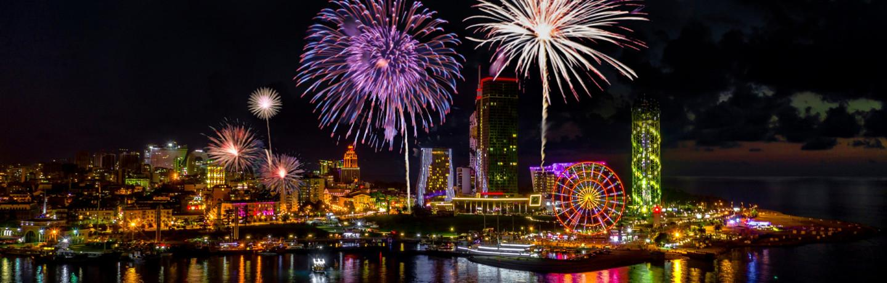
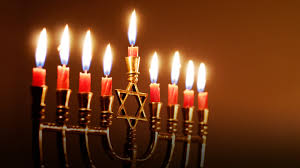
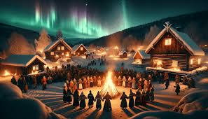
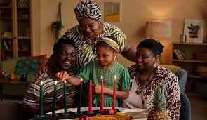
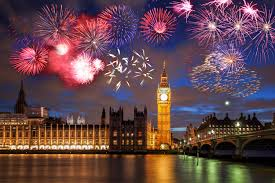

The Old New Year is the Orthodox informal traditional holiday as well in Georgia.
Georgians celebrate the Old New Year on January 14 however they prepare less than it happens on January 1.
People say goodbye the Old New Year with a celebration and meet New Year with new energy.
As you may find out, Georgia stands outs from other countries for its different way of celebrating New Year’s Eve and its traditions in the country.
As people say, the miracle happens on New Year’s Eve. So, we believe, all of your wishes for New Year will come true!
Christmas (December 25): Celebrated by millions around the world, Christmas is a holiday centered on the birth of Jesus Christ.
It's known for its festive decorations, gift-giving traditions, and family gatherings
Many cultures have unique ways of celebrating, from feasts and music to community events and charitable giving.

This Jewish holiday celebrates the miracle of the oil that lasted for eight days in the Holy Temple.
It is marked by the lighting of the menorah, playing games, and enjoying traditional foods like latkes and sufganiyot.
Across various cultures, the winter solstice marks the shortest day and longest night of the year.
Yule Festival in Northern Europe, honor the rebirth of the sun, symbolizing hope and renewal as the days gradually grow longer.
A week-long celebration of African-American culture, Kwanzaa emphasizes community, heritage, and values like unity, self-determination, and creativity
ach day of Kwanzaa is dedicated to a specific principle, and the holiday concludes with a feast and gift-giving.
Celebrations marking the end of the year and the start of the new one are observed globally.
From fireworks and parties to traditions like making resolutions and enjoying a first meal of the year, New Year's is a time for reflection and renewal
